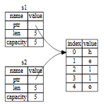

70% of errors listed in MISRA rules for C++ to avoid error are avoided by RUST by default.
Use static dispatch instead of dynamic dispatch and don’t use OOP’s as much as possible and in case of a vector of trait that is implemented by multiple structs use enum example: https://youtu.be/0XFq9K7N9o4?si=5ehhwDs4HURIhAa1
Learning Resources
- A 10-minute lightning talk taking you from zero to Rust!
- A half-hour to learn Rust
- Rust Ownership Visualizer
Basics
Rust is a statically typed language, which means that it must know the types of all variables at compile time. Rust uses the term panicking when a program exits with an error Rust is an expression-based language. In Rust, projects are typically classified into binary and library projects.
Binary Project
- Produces an executable program,
- output is a compiled binary file (e.g., .exe, ELF, or Mach-O) Library Project
- Produces reusable code (a library),
- output is a .rlib (Rust library) or .so/.dll (dynamic library)
// to make a new binary project :
cargo init
// to run code :
cargo run
fn main() {
// Statements here are executed when the compiled binary is called.
// Print text to the console.
println!("Hello World!");
}macro_rules!
macro system that allows meta programming. Instead of generating a function call, macros are expanded into source code that gets compiled with the rest of the program
// This is a simple macro named `say_hello`.
macro_rules! say_hello {
// `()` indicates that the macro takes no argument.
() => {
// The macro will expand into the contents of this block.
println!("Hello!")
};
}
fn main() {
// This call will expand into `println!("Hello!")`
say_hello!()
}conditional :
fn main() {
println!("{}", is_even(10));
}
fn is_even(num: i32) -> bool{
if num%2 == 0 {
return true;
} else {
return false;
}
}Note: by default variables in rust are immutable therefore we are require to add
mutto make them mutable i.e. variable
loop :
fn main() {
println!("{}", fib(5));
}
fn fib(num: i32) -> i32 {
let mut first= 0;
let mut second= 1;
if num == 1 {
return 0;
}
if num == 2 {
return 1;
}
for i in 0..(num-1) {
let temp = second;
second = second + first;
first = temp;
}
return second;
}Strings :
fn main(){
let str = String::from("hello");
println!("{}", get_len_of_str(str));
}
fn get_len_of_str(s: String) -> usize {
s.chars().count()
}use std::io;
fn main() {
println!("Guess the number!");
println!("Please input your guess.");
let mut guess: String = String::new();
io::stdin()
.read_line(&mut guess)
.expect("Failed to read line");
println!("You guessed: {}", guess);
}I/O :
use std::io;
fn main(){
println!("Enter a number: ");
let mut number:String = String::new();
io::stdin()
.read_line(& mut number)
.expect("Failed to read line");
println!("You entered: {}", number);
}The :: syntax in the ::new line indicates that new is an associated function of the String type. An associated function is a function that’s implemented on a type.
read_line puts whatever the user enters into the string we pass to it, but it also returns a Result value. Result is an enumeration, often called an enum enums give you a way of saying a value is one of a possible set of values. enums give you a way of saying a value is one of a possible set of values.
Example:
use std::io;
use std::cmp::Ordering;
use rand::Rng;
fn main(){
println!("Enter a number: ");
let mut guess:String = String::new();
io::stdin()
.read_line(&mut guess)
.expect("Failed to read line");
// Shadowing guess
let guess:u32 = guess.trim().parse().expect("Please type a number!");
println!("You entered: {}", guess);
let mut rng = rand::rng();
let secret_number = rng.random_range(1..=10);
println!("Random number: {}", secret_number);
match guess.cmp(&secret_number) {
Ordering::Less => println!("Too small!"),
Ordering::Greater => println!("Too big!"),
Ordering::Equal => println!("You win!"),
}
}Shadowing lets us reuse the guess variable name rather than forcing us to create two unique variables, such as guess_str and guess
Data Types (fixed sized, stored in stack) :
Shadowing example:
fn main() {
let x = 5;
let x = x + 1;
{
let x = x * 2;
println!("The value of x in the inner scope is: {x}");
}
println!("The value of x is: {x}");
}
// OUTPUT
// The value of x in the inner scope is: 12
// The value of x is: 6The types covered below are of a known size, can be stored on the stack and popped off the stack when their scope is over, and can be quickly and trivially copied to make a new, independent instance if another part of code needs to use the same value in a different scope.
Integer Types:
the isize and usize types depend on the architecture of the computer your program is running on, which is denoted in the table as “arch”: 64 bits if you’re on a 64-bit architecture and 32 bits if you’re on a 32-bit architecture.
> Integer Literal Notations:
let decimal = 42; // Decimal (Base-10)
let hex = 0x2A; // Hexadecimal (0x prefix)
let octal = 0o52; // Octal (0o prefix)
let binary = 0b101010; // Binary (0b prefix)
let byte = b'A'; // Byte literal (ASCII value of 'A' is 65)
println!("Decimal: {}", decimal);
println!("Hex: {}", hex);
println!("Octal: {}", octal);
println!("Binary: {}", binary);
println!("Byte: {}", byte);
// Decimal: 42
// Hex: 42
// Octal: 42
// Binary: 42
// Byte: 65When you’re compiling in release mode with the --release flag, Rust does not include checks for integer overflow that cause panics. Instead, if overflow occurs, Rust performs two’s complement wrapping. In short, values greater than the maximum value the type can hold “wrap around” to the minimum of the values the type can hold. In the case of a u8, the value 256 becomes 0, the value 257 becomes 1, and so on.
Floating-Point Types:
All floating-point types are signed.
fn main() {
let x = 2.0; // f64
let y: f32 = 3.0; // f32
}Boolean Type:
Booleans are one byte in size.
fn main() {
let t = true;
let f: bool = false; // with explicit type annotation
}Character Type:
Rust’s char type is four bytes in size
fn main() {
let c = 'z';
let z: char = 'ℤ'; // with explicit type annotation
let heart_eyed_cat = '😻';
}Compound Types:
Rust has two primitive compound types: tuples and arrays.
-
Tuple Type: number of values with a variety of types into one compound type Tuples have a fixed length: once declared, they cannot grow or shrink in size. The tuple without any values has a special name, unit
fn main() { let tup: (i32, f64, u8) = (500, 6.4, 1); }destructuring tuple values:
fn main() { let tup = (500, 6.4, 1); let (x, y, z) = tup; println!("The value of y is: {y}"); let five_hundred = x.0; let six_point_four = x.1; let one = x.2; } -
Array Type: multiple values of same data type
fn main() { let a = [1, 2, 3, 4, 5]; let a: [i32; 5] = [1, 2, 3, 4, 5]; let a = [3; 5]; // let a = [3, 3, 3, 3, 3]; }Accessing memory out of bound would result Rust to panic and would just exit the program instead of accessing random memory like C.
Functions :
In function signatures, you must declare the type of each parameter
-
Statements are instructions that perform some action and do not return a value. Statements do not return values. Function definitions are also statements Creating a variable and assigning a value to it with the
letkeyword is a statement.fn main() { let x = (let y = 6); } // let y = 6 doesn't return anything // in C assignment return the value (like 6 here) // This is different from what happens in other languages, // such as C and Ruby, where the assignment returns the value // of the assignment. In those languages, you can write // `x = y = 6` and have both `x` and `y` have the value `6`; // that is not the case in Rust. -
Expressions evaluate to a resultant value. Let’s look at some examples. calling a function is an expression as it return a value Calling a function is an expression. Calling a macro is an expression. A new scope block created with curly brackets is an expression.
fn main() { let y = { let x = 3; x + 1 }; println!("The value of y is: {y}"); } // The value of y is: 4Note that the
x + 1line doesn’t have a semicolon at the end, which is unlike most of the lines you’ve seen so far. Expressions do not include ending semicolons. If you add a semicolon to the end of an expression, you turn it into a statement, and it will then not return a value.fn main() { let x = plus_one(5); println!("The value of x is: {x}"); } fn plus_one(x: i32) -> i32 { x + 1; } // The definition of the function `plus_one` says that it will // return an `i32`, but statements don’t evaluate to a value, // which is expressed by `()`, the unit type. Therefore, nothing // is returned, which contradicts the function definition and // results in an error
Control Flow :
Blocks of code associated with the conditions in if expressions are sometimes called arms, just like the arms in match expressions
fn main() {
let number = 3;
if number {
println!("number was three");
}
}
// In C/C++ this would turn true but in Rust it
// results in an error as condition mustbe of a bool Because if is an expression, we can use it on the right side of a let statement to assign the outcome to a variable
fn main() {
let condition = true;
let number = if condition { 5 } else { 6 };
println!("The value of number is: {number}");
}fn main() {
let condition = true;
let number = if condition { 5 } else { "six" };
println!("The value of number is: {number}");
}
// Would turn into an ERROR as number should have a fix data type
// as Rust can't have multiple hypothetical typesloop:
fn main(){
let counter = 0;
let result = loop {
counter +=1;
if counter == 10 {
break counter*2;
}
}
println!("The result is {result}");
}
// OUTPUT: The result is 20
// value after break statement is returned when break is encounteredLoop Labels:
If you have loops within loops, break and continue apply to the innermost loop at that point. You can optionally specify a loop label on a loop that you can then use with break or continue
Loop labels must begin with a single quote.
fn main() {
let mut count = 0;
'counting_up: loop {
println!("count = {count}");
let mut remaining = 10;
loop {
println!("remaining = {remaining}");
if remaining == 9 {
break;
}
if count == 2 {
break 'counting_up;
}
remaining -= 1;
}
count += 1;
}
println!("End count = {count}");
}
// OUPTUT:
// count = 0
// remaining = 10
// remaining = 9
// count = 1
// remaining = 10
// remaining = 9
// count = 2
// remaining = 10
// End count = 2while:
fn main() {
let mut number = 3;
while number != 0 {
println!("{number}!");
number -= 1;
}
println!("LIFTOFF!!!");
}for:
fn main() {
let a = [10, 20, 30, 40, 50];
for element in a {
println!("the value is: {element}");
}
}fn main() {
for number in (1..4).rev() {
println!("{number}!");
}
println!("LIFTOFF!!!");
}
// 3!
// 2!
// 1!
// LIFTOFF!!!Ownership
https://youtu.be/usJDUSrcwqI?si=Z6OBFP_ekKiwr7jq Stack: All data stored on the stack must have a known, fixed size Heap: When you put data on the heap, you request a certain amount of space. The memory allocator finds an empty spot in the heap that is big enough, marks it as being in use, and returns a pointer, which is the address of that location.
A processor can do its job better if it works on data that’s close to other data (as it is on the stack) rather than farther away (as it can be on the heap).
Ownership rules :
- Each value in Rust has an owner.
- There can only be one owner at a time.
- When the owner goes out of scope, the value will be dropped.
So
string literalsare stored in stack, therefore even if astring literalis mutable it cannot be modified as it is stored in stack, but a mutableStringtype, which is used to store unknown size values like values entered during the runtime, is stored in heap and therefore can be modified. In the case of a string literal, we know the contents at compile time, so the text is hardcoded directly into the final executable. This is why string literals are fast and efficient. But these properties only come from the string literal’s immutability.
To allocate variable memory from heap for runtime values:
- The memory must be requested from the memory allocator at runtime.
- We need a way of returning this memory to the allocator when we’re done with our
String(most languages either use Garbage Collector that keep looking for disconnected node or ask us to manually free the memory).
Rust takes a different path: the memory is automatically returned once the variable that owns it goes out of scope
{
let s = String::from("hello"); // s is valid from this point forward
// do stuff with s
} // this scope is now over, and s is no
// longer validWhen a variable goes out of scope, Rust calls
dropfunction, which works like free in C i.e. it frees the allocated space from memory.
double free error :
let s1 = String::from("hello");
let s2 = s1;
Rust automatically calls the drop function and cleans up the heap memory for variable that goes out of scope. This is a problem: when s2 and s1 go out of scope, they will both try to free the same memory. This is known as a double free error and is one of the memory safety bugs. Freeing memory twice can lead to memory corruption, which can potentially lead to security vulnerabilities.
Rust, to ensure memory safety, after the line let s2 = s1;, considers s1 as no longer valid.
This is process is somewhat like a shallow copying but as original string is no longer valid it’s called move.
Rust will never automatically create “deep” copies of your data. Therefore, any automatic copying can be assumed to be inexpensive in terms of runtime performance.
When you assign a completely new value to an existing variable, Rust will call drop and free the original value’s memory immediately. Consider this code, for example:
let mut s = String::from("hello");
s = String::from("ahoy");
println!("{s}, world!"); // ahoy, world!but what if we don’t want to invalidate the original string/variable. We make a clone i.e. a deep copy of that variable. To make a clone is expensive
let s1 = String::from("hello");
let s2 = s1.clone();
println!("s1 = {s1}, s2 = {s2}");Copy Trait :
Rust has a special annotation called the Copy trait that we can place on types that are stored on the stack (directly only and not indirectly)
Incase of variable size like a Vectors (Vec<i32>) their pointers are stored but that doesn’t mean they have Copy trait as actual data is stored in heap
A type with Drop trait can never have Copy trait
Drop Trait :
Rust annotation that tells compiler that a type has custom drop function.
Ownership in Functions :
Passing a variable to a function will move or copy, just as assignment does.
fn main() {
let s1 = gives_ownership(); // gives_ownership moves its return
// value into s1
let s2 = String::from("hello"); // s2 comes into scope
let s3 = takes_and_gives_back(s2); // s2 is moved into
// takes_and_gives_back, which also
// moves its return value into s3
} // Here, s3 goes out of scope and is dropped. s2 was moved, so nothing
// happens. s1 goes out of scope and is dropped.
fn gives_ownership() -> String { // gives_ownership will move its
// return value into the function
// that calls it
let some_string = String::from("yours"); // some_string comes into scope
some_string // some_string is returned and
// moves out to the calling
// function
}
// This function takes a String and returns one
fn takes_and_gives_back(a_string: String) -> String { // a_string comes into
// scope
a_string // a_string is returned and moves out to the calling function
}But we can’t taking ownership and then returning ownership with every function is a bit tedious. Rust has a feature for using a value without transferring ownership, called references.
References and Borrowing
A reference is like a pointer in that it’s an address we can follow to access the data stored at that address; that data is owned by some other variable. Unlike a pointer, a reference is guaranteed to point to a valid value of a particular type for the life of that reference.
fn calculate_length(s: &String) -> usize { // s is a reference to a String
s.len()
} // Here, s goes out of scope. But because s does not have ownership of what
// it refers to, the value is not dropped.The scope in which the variable s is valid is the same as any function parameter’s scope, but the value pointed to by the reference is not dropped when s stops being used, because s doesn’t have ownership.
We call the action of creating a reference borrowing.
Just as variables are immutable by default, so are references.
Borrowing rules :
-
At any given time you can either have one mutable reference or any number of immutable reference The benefit of having this restriction is that Rust can prevent data races at compile time. A data race is similar to a race condition and happens when these three behaviors occur:
- Two or more pointers access the same data at the same time.
- At least one of the pointers is being used to write to the data.
- There’s no mechanism being used to synchronize access to the data.
let mut s = String::from("hello"); let r1 = &mut s; let r2 = &mut s; println!("{}, {}", r1, r2);| 4 | let r1 = &mut s; | ------ first mutable borrow occurs here 5 | let r2 = &mut s; | ^^^^^^ second mutable borrow occurs here 6 | 7 | println!("{}, {}", r1, r2); | -- first borrow later used hereWe also cannot have a mutable reference while we have an immutable one to the same value. Users of an immutable reference don’t expect the value to suddenly change out from under them! However, multiple immutable references are allowed.
let mut s = String::from("hello"); let r1 = &s; // no problem let r2 = &s; // no problem let r3 = &mut s; // BIG PROBLEM println!("{}, {}, and {}", r1, r2, r3);Note that a reference’s scope starts from where it is introduced and continues through the last time that reference is used.
let mut s = String::from("hello"); let r1 = &s; // no problem let r2 = &s; // no problem println!("{r1} and {r2}"); // variables r1 and r2 will not be used after this point let r3 = &mut s; // no problem println!("{r3}"); -
Reference must always be valid (i.e. referenced value must have long enough lifetime) In Rust, the compiler guarantees that references will never be dangling references: if you have a reference to some data, the compiler will ensure that the data will not go out of scope before the reference to the data does.
fn main() { let reference_to_nothing = dangle(); } fn dangle() -> &String { // dangle returns a reference to a String let s = String::from("hello"); // s is a new String &s // we return a reference to the String, s } // Here, s goes out of scope, and is dropped. Its memory goes away. // Danger!
Slice Type :
Slices let you reference a contiguous sequence of elements in a collection rather than the whole collection. A slice is a kind of reference, so it does not have ownership. Unlike the built-in array and tuple types, the data these collections point to is stored on the heap, which means the amount of data does not need to be known at compile time and can grow or shrink as the program runs. collection example vector, string, hash maps
// Example 1:
fn first_word(s: &String) -> usize {
let bytes = s.as_bytes();
for (i, &item) in bytes.iter().enumerate() {
if item == b' ' {
return i;
}
}
s.len()
}
fn main() {
let mut s = String::from("hello world");
let word = first_word(&s); // word will get the value 5
s.clear(); // this empties the String, making it equal to ""
// `word` still has the value `5` here, but `s` no longer has any content
// that we could meaningfully use with the value `5`, so `word` is now
// totally invalid!
}This program compiles without any errors and would also do so if we used word after calling s.clear(). Because word isn’t connected to the state of s at all, word still contains the value 5. We could use that value 5 with the variable s to try to extract the first word out, but this would be a bug because the contents of s have changed since we saved 5 in word.
Having to worry about the index in word getting out of sync with the data in s is tedious and error prone!
Rust has a solution to this problem: string slices.
String Slices :
A string slice is a value that is made up of a reference to the starting point of the slice and the number of elements in the slice.
let s = String::from("hello world");
let hello = &s[0..5];
let world = &s[6..11];let s = String::from("hello");
let slice1 = &s[0..2];
let slice2 = &s[..2]; // both slice1 and slice2 are same
let len = s.len();
let slice3 = &s[3..len];
let slice4 = &s[3..]; // both slice3 and slice4 are same// Rewrite Example 1 first_word function to return a slice
fn first_word(s: &String) -> &str {
let bytes = s.as_bytes();
for (i, &item) in bytes.iter().enumerate() {
if item == b' ' {
return &s[0..i];
}
}
&s[..]
}So as string literals are can point to any String &String can be written as &str and this is better because, &str can hold both String and string literal i.e. string slices
Structs
A struct, or structure, is a custom data type that lets you package together and name multiple related values that make up a meaningful group.
struct User {
active: bool,
username: String,
email: String,
sign_in_count: u64,
}
fn main() {
let mut user1 = User {
active: true,
username: String::from("someusername123"),
email: String::from("someone@example.com"),
sign_in_count: 1,
};
user1.email = String::from("anotheremail@example.com");
}
fn build_user(email: String, username: String) -> User {
User {
active: true,
username,
email,
sign_in_count: 1,
}
}fn main() {
// --snip--
let user2 = User {
active: user1.active,
username: user1.username,
email: String::from("another@example.com"),
sign_in_count: user1.sign_in_count,
};
}
// struct update syntax:
fn main() {
// --snip--
let user2 = User {
email: String::from("another@example.com"),
..user1
};
}Note that the entire instance must be mutable; Rust doesn’t allow us to mark only certain fields as mutable. As with any expression, we can construct a new instance of the struct as the last expression in the function body to implicitly return that new instance.
In this example, we can no longer use user1 as a whole after creating user2 as active and sign_in_count have Copy trait they won’t be dropped, but the String in the username field of user1 was moved into user2.
Tuple Struct :
Tuple structs have the added meaning the struct name provides but don’t have names associated with their fields; rather, they just have the types of the fields.
struct Color(i32, i32, i32);
struct Point(i32, i32, i32);
fn main() {
let black = Color(0, 0, 0);
let origin = Point(0, 0, 0);
}Note that the black and origin values are different types because they’re instances of different tuple structs. Each struct you define is its own type, even though the fields within the struct might have the same types. For example, a function that takes a parameter of type Color cannot take a Point as an argument, even though both types are made up of three i32 values.
Unit-like Structs :
structs that don’t have any fields, they behave similarly to (). Unit-like structs can be useful when you need to implement a trait on some type but don’t have any data that you want to store in the type itself.
struct AlwaysEqual;
fn main() {
let subject = AlwaysEqual;
}Note that accessing fields of a borrowed struct instance does not move the field values, which is why you often see borrows of structs
Adding Derived Traits :
struct Rectangle {
width: u32,
height: u32,
}
fn main() {
let rect1 = Rectangle {
width: 30,
height: 50,
};
println!("rect1 is {}", rect1);
}
// OUTPUT: error[E0277]: `Rectangle` doesn't implement `std::fmt::Display`The println! macro can do many kinds of formatting, and by default, the curly brackets {} tell println! to use formatting known as Display trait: output intended for direct end user consumption. The primitive types we’ve seen so far implement Display by default
But with structs, the way println! should format the output is less clear because there are more display possibilities: Do you want commas or not? Do you want to print the curly brackets? Should all the fields be shown?
Putting the specifier :? inside the curly brackets tells println! we want to use an output format called Debug. The Debug trait enables us to print our struct in a way that is useful for developers so we can see its value while we’re debugging our code.
Rust does include functionality to print out debugging information, but we have to explicitly opt in to make that functionality available for our struct. To do that, we add the outer attribute #[derive(Debug)] just before the struct definition
#[derive(Debug)]
struct Rectangle {
width: u32,
height: u32,
}
fn main() {
let rect1 = Rectangle {
width: 30,
height: 50,
};
println!("rect1 is {rect1:?}");
}Another way to print out a value using the Debug format is to use the dbg! macro, which takes ownership of an expression (as opposed to println!, which takes a reference), prints the file and line number of where that dbg! macro call occurs in your code along with the resultant value of that expression, and returns ownership of the value.
Note: Calling the
dbg!macro prints to the standard error console stream (stderr), as opposed toprintln!, which prints to the standard output console stream (stdout).
Method
Methods are similar to functions: we declare them with the fn keyword and a name, they can have parameters and a return value, and they contain some code that’s run when the method is called from somewhere else. Unlike functions, methods are defined within the context of a struct (or an enum or a trait object), and their first parameter is always self, which represents the instance of the struct the method is being called on.
#[derive(Debug)]
struct Rectangle {
width: u32,
height: u32,
}
impl Rectangle {
fn area(&self) -> u32 {
self.width * self.height
}
}
fn main() {
let rect1 = Rectangle {
width: 30,
height: 50,
};
println!(
"The area of the rectangle is {} square pixels.",
rect1.area()
);
}Everything within this impl (implementation) block will be associated with the Rectangle type.
The method syntax goes after an instance: we add a dot followed by the method name, parentheses, and any arguments.
In the signature for area, we use &self instead of rectangle: &Rectangle. The &self is actually short for self: &Self. Within an impl block, the type Self is an alias for the type that the impl block is for. Methods must have a parameter named self of type Self for their first parameter.
If we wanted to change the instance that we’ve called the method on as part of what the method does, we’d use &mut self as the first parameter.
Often, but not always, when we give a method the same name as a field we want it to only return the value in the field and do nothing else. Methods like this are called Getters, and Rust does not implement them automatically for struct fields as some other languages do.
Example on how to handle more than one parameters in a method :
impl Rectangle {
fn area(&self) -> u32 {
self.width * self.height
}
fn can_hold(&self, other: &Rectangle) -> bool {
self.width > other.width && self.height > other.height
}
}
fn main() {
let rect1 = Rectangle {
width: 30,
height: 50,
};
let rect2 = Rectangle {
width: 10,
height: 40,
};
let rect3 = Rectangle {
width: 60,
height: 45,
};
println!("Can rect1 hold rect2? {}", rect1.can_hold(&rect2));
println!("Can rect1 hold rect3? {}", rect1.can_hold(&rect3));
}Associated functions:
All functions defined within an impl block are called associated functions because they’re associated with the type named after the impl
Associated functions that have self as their first parameter are called Methods because they use self.
Associated functions that aren’t methods are often used for constructors that will return a new instance of the struct.
To call this associated function, we use the :: syntax with the struct name.
// here square is a constructor
impl Rectangle {
fn square(size: u32) -> Self {
Self {
width: size,
height: size,
}
}
}
fn main(){
let sq = Rectangle::square(3);
}Enum (enumerations)
Enums allow you to define a type by enumerating its possible variants (value is one of a possible set of values).
// Instead of this:
enum IpAddrKind {
V4,
V6,
}
struct IpAddr {
kind: IpAddrKind,
address: String,
}
let home = IpAddr {
kind: IpAddrKind::V4,
address: String::from("127.0.0.1"),
};
let loopback = IpAddr {
kind: IpAddrKind::V6,
address: String::from("::1"),
};
// Use this:
enum IpAddr {
V4(String),
V6(String),
}
let home = IpAddr::V4(String::from("127.0.0.1"));
let loopback = IpAddr::V6(String::from("::1"));just as we’re able to define methods on structs using impl, we’re also able to define methods on enums.
enum Message {
Quit,
Move { x: i32, y: i32 },
Write(String),
ChangeColor(i32, i32, i32),
}
impl Message {
fn call(&self) {
// method body would be defined here
}
}
let m = Message::Write(String::from("hello"));
m.call();Null References: The Billion Dollar Mistake,” Tony Hoare, the inventor of null, has this to say, It was a billion dollar mistake
However, the concept that null is trying to express is still a useful one: a null is a value that is currently invalid or absent for some reason. Therefore Rust use enum Option<T> which represent a value that might be present (Some(T)) or might be absent (None).
enum Option<T> {
Some(T), // ✅ Holds a value of type T
None, // ❌ Represents no value
} let some_number = Some(5);
let some_char = Some('e');
let absent_number: Option<i32> = None;fn main() {
let x: i8 = 5;
let y: Option<i8> = Some(5);
let sum = x + y;
println!("sum is {sum}");
}
// Error :
// no implementation for i8 + Option<i8>
// Rust doesn’t understand how to add an i8 and an Option<i8>,
// because they’re different types.
fn main() {
let x: i8 = 5;
let y: Option<i8> = Some(5);
match y {
Some(x) => println!("{} is equal to", x, y),
None => println!("No value found!"),
}
}
fn main() {
let x: i8 = 6;
let y: Option<i8> = Some(5);
match y {
Some(val) =>
{
if val == x {
println!("{} is equal to {}", val, x);
} else {
println!("{} is not equal to {}", val, x);
}
},
None => println!("No value found!"),
}
}
// OUTPUT:
// 5 is not equal to 6fn main() {
let number = Some(42);
if let Some(n) = number {
println!("The number is: {}", n);
}
}Control Flow Constructs
match :
compare a value against a series of patterns and then execute code based on which pattern matches
compiler confirms that all possible cases are handled.
values go through each pattern in a match, and at the first pattern the value “fits,” the value falls into the associated code block to be used during execution.
enum Coin {
Penny,
Nickel,
Dime,
Quarter,
}
fn value_in_cents(coin: Coin) -> u8 {
match coin {
Coin::Penny => 1,
Coin::Nickel => 5,
Coin::Dime => 10,
Coin::Quarter => 25,
}
}match arms. An arm has two parts: a pattern and some code. The first arm here has a pattern that is the value Coin::Penny and then the => operator that separates the pattern and the code to run
The code associated with each arm is an expression, and the resultant value of the expression in the matching arm is the value that gets returned for the entire match expression.
Catch all arm:
let dice_roll = 9;
match dice_roll {
3 => add_fancy_hat(),
7 => remove_fancy_hat(),
other => move_player(other),
}
fn add_fancy_hat() {}
fn remove_fancy_hat() {}
fn move_player(num_spaces: u8) {}
// This code compiles, even though we haven’t listed all the possible values a `u8` can have, because the last pattern (a variable named other) will match all values not specifically listed.
// here other iss catch all armRust default catch all pattern : _
let dice_roll = 9;
match dice_roll {
3 => add_fancy_hat(),
7 => remove_fancy_hat(),
_ => reroll(),
}
fn add_fancy_hat() {}
fn remove_fancy_hat() {}
fn reroll() {}if let (Concise Control Flow)
match one pattern while ignoring the rest.
enum Coin {
Penny,
Nickel,
Dime,
Quarter,
}
fn main() {
let acoin: Coin = Coin::Nickel;
if let Coin::Penny = acoin {
println!("It's a Penny!");
} else {
println!("It's not a Penny");
}
}
// OUTPUT:
// It's not a PennyWhy we use
=instead of==inif let?
if letdoes not assign values—it matches patterns.if let Coin::Penny = acoin {}Checks ifacoinisCoin::Pennyand destructures the value if it matches.
Packages, Crates and Modules
A package can contain multiple binary crates and optionally one library crate
- Packages: A Cargo feature that lets you build, test, and share crates
- Crates: A tree of modules that produces a library or executable
- Modules and use: Let you control the organization, scope, and privacy of paths
- Paths: A way of naming an item, such as a struct, function, or module
A crate is the smallest amount of code that the Rust compiler considers at a time.
Binary Project
- Produces an executable program,
- Each must have a function called
mainthat defines what happens when the executable runs, - output is a compiled binary file (e.g., .exe, ELF, or Mach-O) Library Project
- Produces reusable code (a library),
- Library crates don’t have a
mainfunction, and they don’t compile to an executable, - output is a .rlib (Rust library) or .so/.dll (dynamic library)
The crate root is a source file that the Rust compiler starts from and makes up the root module of your crate
A package is a bundle of one or more crates that provides a set of functionality.
In the crate root file, you can declare new modules; say you declare a “garden” module with mod garden;
The compiler will look for the module’s code in these places:
- Inline, within curly brackets that replace the semicolon following
mod garden - In the file src/garden.rs
- In the file src/garden/mod.rs
For example, an
Asparagustype in the garden vegetables module would be found atcrate::garden::vegetables::Asparagus.
Code within a module is private from its parent modules by default. To make a module public, declare it with pub mod instead of mod. To make items within a public module public as well, use pub before their declarations.
backyard
├── Cargo.lock
├── Cargo.toml
└── src
├── garden
│ └── vegetables.rs
├── garden.rs
└── main.rsWithin a scope, the use keyword creates shortcuts to items to reduce repetition of long paths. Note that use only creates the shortcut for the particular scope in which the use occurs.
Adding use and a path in a scope is similar to creating a symbolic link in the filesystem.
// main.rs :
use crate::garden::vegetables::Asparagus;
pub mod garden;
fn main() {
let plant = Asparagus {};
println!("I'm growing {plant:?}!");
}// garden.rs
pub mod vegetables;// vegetables.rs
#[derive(Debug)]
pub struct Asparagus {}paths :
To show Rust where to find an item in a module tree, we use a path. A path can take two forms:
- An absolute path is the full path starting from a crate root; for code from an external crate, the absolute path begins with the crate name, and for code from the current crate, it starts with the literal
crate. - A relative path starts from the current module and uses
self,super, or an identifier in the current module.
mod front_of_house {
pub mod hosting {
pub fn add_to_waitlist() {}
}
}
pub fn eat_at_restaurant() {
// Absolute path
crate::front_of_house::hosting::add_to_waitlist();
// Relative path
front_of_house::hosting::add_to_waitlist();
}We can construct relative paths that begin in the parent module, rather than the current module or the crate root, by using super at the start of the path.
// instead of this :
use std::cmp::Ordering;
use std::io;
// code this :
use std::{cmp::Ordering, io};
// and instead of this :
use std::io;
use std::io::Write;
// code this :
use std::io::{self, Write};Making structs and enums Public :
If we use pub before a struct definition, we make the struct public, but the struct’s fields will still be private, unless we explicitly specify.
mod back_of_house {
pub struct Breakfast {
pub toast: String,
seasonal_fruit: String,
}
impl Breakfast {
pub fn summer(toast: &str) -> Breakfast {
Breakfast {
toast: String::from(toast),
seasonal_fruit: String::from("peaches"),
}
}
}
}
pub fn eat_at_restaurant() {
// Order a breakfast in the summer with Rye toast
let mut meal = back_of_house::Breakfast::summer("Rye");
// Change our mind about what bread we'd like
meal.toast = String::from("Wheat");
println!("I'd like {} toast please", meal.toast);
// The next line won't compile if we uncomment it; we're not allowed
// to see or modify the seasonal fruit that comes with the meal
// meal.seasonal_fruit = String::from("blueberries");
}In contrast, if we make an enum public, all of its variants are then public.
mod back_of_house {
pub enum Appetizer {
Soup,
Salad,
}
}
pub fn eat_at_restaurant() {
let order1 = back_of_house::Appetizer::Soup;
let order2 = back_of_house::Appetizer::Salad;
}use and super keyword :
mod front_of_house {
pub mod hosting {
pub fn add_to_waitlist() {}
}
}
use crate::front_of_house::hosting;
mod customer {
pub fn eat_at_restaurant() {
hosting::add_to_waitlist();
}
}
// COMPILE TIME ERROR
// eat_at_restaurant function into a new child module
// named customer, which is then a different scope than
// the `use` statement, so the function body won’t compile.
// To fix this error we can either use `super`:
mod customer {
pub fn eat_at_restaurant() {
super::hosting::add_to_waitlist();
}
}
// or use `pub use`:
pub use crate::front_of_house::hosting;as keyword :
solution to the problem of bringing two types of the same name into the same scope with use: after the path, we can specify as and a new local name, or alias, for the type.
use std::fmt::Result;
use std::io::Result as IoResult;
fn function1() -> Result {
// --snip--
}
fn function2() -> IoResult<()> {
// --snip--
}glob operator :
If we want to bring all public items defined in a path into scope, we can specify that path followed by the * glob operator:
use std::collections::*;Collections
Vectors (works as stack) :
// here we specify the data type and create
// new empty vector
let v: Vec<i32> = Vec::new();
// here Rust infer the type from `vec!` macro
let mut v = vec![1, 2, 3];
// the push pop functions works as Stack
v.push(5);
v.push(6);
v.push(7);
v.push(8);
match v.pop() {
Some(num) => println!("{num}"),
None => println!("its empty")
}There are two ways to reference a value stored in a vector: via indexing or by using the get method.
let v = vec![1, 2, 3, 4, 5];
// using indexing :
let third: &i32 = &v[2];
println!("The third element is {third}");
// using `get` :
let third: Option<&i32> = v.get(2);
match third {
Some(third) => println!("The third element is {third}"),
None => println!("There is no third element."),
}When we run this code, the first [] method will cause the program to panic because it references a nonexistent element. This method is best used when you want your program to crash if there’s an attempt to access an element past the end of the vector.
When the get method is passed an index that is outside the vector, it returns None without panicking. You would use this method if accessing an element beyond the range of the vector may happen occasionally under normal circumstances.
Iterating over vectors :
let v = vec![100, 32, 57];
for i in &v {
println!("{i}");
}
// using mutable referencex :
let mut v = vec![100, 32, 57];
for i in &mut v {
*i += 50;
}
// To change the value that the mutable reference
// refers to, we have to use the `*` dereference
// operator to get to the value in `i` before we
// can use the `+=` operator.Strings :
Rust has only one string type in the core language, which is the string slice str that is usually seen in its borrowed form &str.
String ⇒ Heap allocated, mutable string literal ⇒ Stack allocated, immutable string slices ⇒ reference to String or string literal
let data = "initial contents";
let s = data.to_string();
// the method also works on a literal directly:
let s = "initial contents".to_string();
// or better
let s = String::from("initial contents");let s1 = String::from("Hello, ");
let s2 = String::from("world!");
let s3 = s1 + &s2; // note s1 has been moved here and can no longer be usedlet s1 = String::from("tic");
let s2 = String::from("tac");
let s3 = String::from("toe");
let s = format!("{s1}-{s2}-{s3}");
// This code also sets `s` to `tic-tac-toe`.
// The `format!` macro works like `println!`, but
// instead of printing the output to the screen,
// it returns a `String` with the contents.String slices :
let hello = String::from("Hola");
let h = &hello[0..2];
println!("{h}");
// OUTPUT : HoIterating over Strings :
for c in "Hola".chars() {
println!("{c}");
}
// OUTPUT :
// H
// o
// l
// aHash Maps :
The type HashMap<K, V> stores a mapping of keys of type K to values of type V using a hashing function, which determines how it places these keys and values into memory.
use std::collections::HashMap;
let mut scores = HashMap::new();
scores.insert(String::from("Blue"), 10);
scores.insert(String::from("Yellow"), 50);
let team_name = String::from("Blue");
let score = scores.get(&team_name).copied().unwrap_or(0);
for (key, value) in &scores {
println!("{key}: {value}");
}hash maps are homogeneous: all of the keys must have the same type, and all of the values must have the same type.
use std::collections::HashMap;
let field_name = String::from("Favorite color");
let field_value = String::from("Blue");
let mut map = HashMap::new();
map.insert(field_name, field_value);
// field_name and field_value are invalid at this point
// We aren’t able to use the variables `field_name` and
// `field_value` after they’ve been moved into the hash
// map with the call to `insert`.Overwriting a value :
use std::collections::HashMap;
let mut scores = HashMap::new();
scores.insert(String::from("Blue"), 10);
scores.insert(String::from("Blue"), 25);
println!("{scores:?}");
// OUTPUT :
// {"Blue": 25}Adding a Key and Value Only If a Key Isn’t Present :
Hash maps have a special API for this called entry that takes the key you want to check as a parameter. The return value of the entry method is an enum called Entry that represents a value that might or might not exist. Let’s say we want to check whether the key for the Yellow team has a value associated with it. If it doesn’t, we want to insert the value 50, and the same for the Blue team.
use std::collections::HashMap;
let mut scores = HashMap::new();
scores.insert(String::from("Blue"), 10);
scores.entry(String::from("Yellow")).or_insert(50);
scores.entry(String::from("Blue")).or_insert(50);
println!("{scores:?}");
// OUTPUT :
// {"Yellow": 50, "Blue": 10}Updating a Value based on Old Value :
use std::collections::HashMap;
let text = "hello world wonderful world";
let mut map = HashMap::new();
for word in text.split_whitespace() {
let count = map.entry(word).or_insert(0);
*count += 1;
by }
println!("{map:?}");
// OUTPUT :
// {"world": 2, "hello": 1, "wonderful": 1}By default,
HashMapuses a hashing function called SipHash that can provide resistance to denial-of-service (DoS) attacks involving hash tables.
Error Handling
Rust groups errors into two major categories: recoverable and unrecoverable errors. For a recoverable error, such as a file not found error, we most likely just want to report the problem to the user and retry the operation. Unrecoverable errors are always symptoms of bugs, such as trying to access a location beyond the end of an array, and so we want to immediately stop the program.
Most languages don’t distinguish between these two kinds of errors and handle both in the same way, using mechanisms such as exceptions. Rust doesn’t have exceptions. Instead, it has the type Result<T, E> for recoverable errors and the panic! macro that stops execution when the program encounters an unrecoverable error.
Unrecoverable Errors with panic! :
By default, when a panic occurs the program starts unwinding, which means Rust walks back up the stack and cleans up the data from each function it encounters. However, walking back and cleaning up is a lot of work. Rust, therefore, allows you to choose the alternative of immediately aborting, which ends the program without cleaning up.
Memory that the program was using will then need to be cleaned up by the operating system. If in your project you need to make the resultant binary as small as possible, you can switch from unwinding to aborting upon a panic by adding panic = 'abort' to the appropriate [profile] sections in your Cargo.toml file. For example, if you want to abort on panic in release mode, add this:
[profile.release]
panic = 'abort'fn main() {
panic!("crash and burn");
}When you run the program, you’ll see something like this:
$ cargo run
Compiling panic v0.1.0 (file:///projects/panic)
Finished `dev` profile [unoptimized + debuginfo] target(s) in 0.25s
Running `target/debug/panic`
thread 'main' panicked at src/main.rs:2:5:
crash and burn
note: run with `RUST_BACKTRACE=1` environment variable to display a backtraceThe note: line tells us that we can set the RUST_BACKTRACE environment variable to get a backtrace of exactly what happened to cause the error. A backtrace is a list of all the functions that have been called to get to this point.
In order to get backtraces with this information, debug symbols must be enabled. Debug symbols are enabled by default when using cargo build or cargo run without the --release flag.
Recoverable Errors with Result :
Result enum is defined as having two variants, Ok and Err
enum Result<T, E> {
Ok(T),
Err(E),
}use std::fs::File;
fn main() {
let greeting_file_result = File::open("hello.txt");
let greeting_file = match greeting_file_result {
Ok(file) => file,
Err(error) => panic!("Problem opening the file: {error:?}"),
};
}The return type of File::open is a Result<T, E>. The generic parameter T has been filled in by the implementation of File::open with the type of the success value, std::fs::File, which is a file handle. The type of E used in the error value is std::io::Error. This return type means the call to File::open might succeed and return a file handle that we can read from or write to. The function call also might fail: for example, the file might not exist, or we might not have permission to access the file. The File::open function needs to have a way to tell us whether it succeeded or failed and at the same time give us either the file handle or error information. This information is exactly what the Result enum conveys.
However, we want to take different actions for different failure reasons. If File::open failed because the file doesn’t exist, we want to create the file and return the handle to the new file. If File::open failed for any other reason we want the code to panic!
use std::fs::File;
use std::io::ErrorKind;
fn main() {
let greeting_file_result = File::open("hello.txt");
let greeting_file = match greeting_file_result {
Ok(file) => file,
Err(error) => match error.kind() {
ErrorKind::NotFound => match File::create("hello.txt") {
Ok(fc) => fc,
Err(e) => panic!("Problem creating the file: {e:?}"),
},
other_error => {
panic!("Problem opening the file: {other_error:?}");
}
},
};
}same above code using closures :
use std::fs::File;
use std::io::ErrorKind;
fn main() {
let greeting_file = File::open("hello.txt").unwrap_or_else(|error| {
if error.kind() == ErrorKind::NotFound {
File::create("hello.txt").unwrap_or_else(|error| {
panic!("Problem creating the file: {error:?}");
})
} else {
panic!("Problem opening the file: {error:?}");
}
});
}unwrap :
The unwrap method is a shortcut method implemented just like the match expression
If the Result value is the Ok variant, unwrap will return the value inside the Ok. If the Result is the Err variant, unwrap will call the panic! macro for us.
use std::fs::File;
fn main() {
let greeting_file = File::open("hello.txt").unwrap();
}If we run this code without a hello.txt file, we’ll see an error message from the panic! call that the unwrap method makes:
thread 'main' panicked at src/main.rs:4:49:
called `Result::unwrap()` on an `Err` value: Os { code: 2, kind: NotFound, message: "No such file or directory" }the expect method lets us also choose the panic! error message. Using expect instead of unwrap and providing good error messages can convey your intent and make tracking down the source of a panic easier.
use std::fs::File;
fn main() {
let greeting_file = File::open("hello.txt")
.expect("hello.txt should be included in this project");
}A Shortcut for Propagating Errors: the ? Operator :
use std::fs::File;
use std::io::{self, Read};
fn read_username_from_file() -> Result<String, io::Error> {
let username_file_result = File::open("hello.txt");
let mut username_file = match username_file_result {
Ok(file) => file,
Err(e) => return Err(e),
};
let mut username = String::new();
match username_file.read_to_string(&mut username) {
Ok(_) => Ok(username),
Err(e) => Err(e),
}
}function is returning a value of the type Result<T, E>, i.e. we are propagating the Error / Success to the calling function
function succeeds ⇒ calling function receives String- the username
function encounters error ⇒ returns Error of type io::Error
Shortcut
?operator :
use std::fs::File;
use std::io::{self, Read};
fn read_username_from_file() -> Result<String, io::Error> {
let mut username_file = File::open("hello.txt")?;
let mut username = String::new();
username_file.read_to_string(&mut username)?;
Ok(username)
}The ? placed after a Result value is defined to work in almost the same way as the match expressions we defined to handle the Result values in above example;
?only works if the return type of the function isResultorOptionso that it’s compatible with this return of?operator.
OR EVEN BETTER just chain them:
use std::fs::File;
use std::io::{self, Read};
fn read_username_from_file() -> Result<String, io::Error> {
let mut username = String::new();
File::open("hello.txt")?.read_to_string(&mut username)?;
Ok(username)
}Difference Between
matchand?:
error values that have the ? operator called on them go through the from function, defined in the From trait in the standard library, which is used to convert values from one type into another. When the ? operator calls the from function, the error type received is converted into the error type defined in the return type of the current function. This is useful when a function returns one error type to represent all the ways a function might fail, even if parts might fail for many different reasons.
// We can just read from a file diretly using read_to_string too
use std::fs;
use std::io;
fn read_username_from_file() -> Result<String, io::Error> {
fs::read_to_string("hello.txt")
}This code doesn’t work because ? operator returns an Result but main doesn’t have any return type
use std::fs::File;
fn main() {
let greeting_file = File::open("hello.txt")?;
}This works because we defined return type of main function
use std::error::Error;
use std::fs::File;
fn main() -> Result<(), Box<dyn Error>> {
let greeting_file = File::open("hello.txt")?;
Ok(())
}Box<dyn Error> mean “any kind of error.”
When a main function returns a Result<(), E>, the executable will exit with a value of 0 if main returns Ok(()) and will exit with a nonzero value if main returns an Err value.
Using Error Handling in Guess Game :
use std::io;
use std::cmp::Ordering;
use rand::Rng;
struct Guess {
num: u32
}
impl Guess {
pub fn check_range(num:u32) -> Guess {
if num<1 || num>10 {
panic!("Enter the number in 1 to 10 range");
}
Guess {num}
}
}
fn main(){
println!("Enter a number: ");
let mut guess:String = String::new();
io::stdin()
.read_line(&mut guess)
.expect("Failed to read line");
// Shadowing guess
let guess:u32 = guess.trim().parse().expect("Please type a number!");
let guess = Guess::check_range(guess);
println!("You entered: {}", guess.num);
let mut rng = rand::rng();
let secret_number = rng.random_range(1..=10);
println!("Random number: {}", secret_number);
match guess.num.cmp(&secret_number) {
Ordering::Less => println!("Too small!"),
Ordering::Greater => println!("Too big!"),
Ordering::Equal => println!("You win!"),
}
}Generic Types
We want to find largest number and character in a Vector but we have to write same logic for both :
fn largest_i32(list: &[i32]) -> &i32 {
let mut largest = &list[0];
for item in list {
if item > largest {
largest = item;
}
}
largest
}
fn largest_char(list: &[char]) -> &char {
let mut largest = &list[0];
for item in list {
if item > largest {
largest = item;
}
}
largest
}
fn main() {
let number_list = vec![34, 50, 25, 100, 65];
let result = largest_i32(&number_list);
println!("The largest number is {result}");
let char_list = vec!['y', 'm', 'a', 'q'];
let result = largest_char(&char_list);
println!("The largest char is {result}");
}So we can just make parameter of function to find largest a Generic type with some constraint on data types that have a particular Traits can only be allowed.
fn get_largest<T: PartialOrd + Copy>(list: Vec<T>) -> T {
let mut largest:T = list[0];
for n:T in list {
if n > largest {
largest = n;
}
}
largest
}here we have to add PartialOrd(data types that can be ordered by some kind of comparison) and Copy traits because we are copying(let mut largest:T = list[0];) and comparing(n > largest)
Generics in Method Definitions :
struct Point<T> {
x: T,
y: T,
}
impl<T> Point<T> {
fn x(&self) -> &T {
&self.x
}
}
fn main() {
let p = Point { x: 5, y: 10 };
// Note here haven't define a fn on y
// so we can't access y() because it doesn't exist
println!("p.x() = {}", p.x());
println!("p.y = {}",p.y);
}struct Point<X1, Y1> {
x: X1,
y: Y1,
}
impl<X1, Y1> Point<X1, Y1> {
fn mixup<X2, Y2>(self, other: Point<X2, Y2>) -> Point<X1, Y2> {
Point {
x: self.x,
y: other.y,
}
}
}
fn main() {
let p1 = Point { x: 5, y: 10.4 };
let p2 = Point { x: "Hello", y: 'c' };
let p3 = p1.mixup(p2);
println!("p3.x = {}, p3.y = {}", p3.x, p3.y);
}
// OUTPUT :
// p3.x = 5, p3.y = cTraits(define behavior)
A type’s behavior consists of the methods we can call on that type. Different types share the same behavior if we can call the same methods on all of those types. Trait definitions are a way to group method signatures together to define a set of behaviors necessary to accomplish some purpose.
Example: NewsArticles and Tweets both have a trait / behavior / method where we want to summarize the post
pub trait Summary {
fn summarize(&self) -> String;
}
pub struct NewsArticle {
pub headline: String,
pub location: String,
pub author: String,
pub content: String,
}
impl Summary for NewsArticle {
fn summarize(&self) -> String {
format!("{}, by {} ({})", self.headline, self.author, self.location)
}
}
pub struct Tweet {
pub username: String,
pub content: String,
pub reply: bool,
pub retweet: bool,
}
impl Summary for Tweet {
fn summarize(&self) -> String {
format!("{}: {}", self.username, self.content)
}
}We can also have default functions for traits, these are overwritten when we declare the same function in the implementation of that trait on a type. For Example:
pub trait Summary {
fn summarize_author(&self) -> String;
fn summarize(&self) -> String {
format!("(Read more from {}...)", self.summarize_author())
}
}// here for tweets we have overwritten the default
// `summarize_author` function defined above
impl Summary for Tweet {
fn summarize_author(&self) -> String {
format!("@{}", self.username)
}
}Traits as parameters :
pub fn notify(item: &impl Summary) {
println!("Breaking news! {}", item.summarize());
}
// the above function is a syntax sugar for
// trait bound syntax :
pub fn notify<T: Summary>(item: &T) {
println!("Breaking news! {}", item.summarize());
}
// for multiple parameters with common traits, trait
// bound syntax is better
fn some_function<T: Display + Clone, U: Clone + Debug>(t: &T, u: &U) -> i32 {
// ---- code ----
}
// but the above some_function has too many trait bounds
// and looks cluttered so use `where` clause
fn some_function<T, U>(t: &T, u: &U) -> i32
where
T: Display + Clone,
U: Clone + Debug,
{
// ---- code ----
}Returning types that implement Traits :
fn returns_summarizable() -> impl Summary {
Tweet {
username: String::from("horse_ebooks"),
content: String::from(
"of course, as you probably already know, people",
),
reply: false,
retweet: false,
}
}Note that below code won’t work because of how
implis implemented in compiler :
fn returns_summarizable(switch: bool) -> impl Summary {
if switch {
NewsArticle {
headline: String::from(
"Penguins win the Stanley Cup Championship!",
),
location: String::from("Pittsburgh, PA, USA"),
author: String::from("Iceburgh"),
content: String::from(
"The Pittsburgh Penguins once again are the best \
hockey team in the NHL.",
),
}
} else {
Tweet {
username: String::from("horse_ebooks"),
content: String::from(
"of course, as you probably already know, people",
),
reply: false,
retweet: false,
}
}
}Using Trait Bounds to Conditionally Implement Methods :
use std::fmt::Display;
struct Pair<T> {
x: T,
y: T,
}
impl<T> Pair<T> {
fn new(x: T, y: T) -> Self {
Self { x, y }
}
}
impl<T: Display + PartialOrd> Pair<T> {
fn cmp_display(&self) {
if self.x >= self.y {
println!("The largest member is x = {}", self.x);
} else {
println!("The largest member is y = {}", self.y);
}
}
}Lifetimes
// Error: x don't live long enough
fn main() {
let r;
{
let x = 5;
r = &x;
} // x is dropped here
println!("r: {r}"); // r becomes dangling pointer so code doesn't compile
}So just code this:
fn main() {
let x = 5; // ----------+-- 'b
// |
let r = &x; // --+-- 'a |
// | |
println!("r: {r}"); // | |
} // --+-------+x has the lifetime ‘b, which in this case is larger than lifetime of r i.e. ‘a
Generic lifetimes in functions :
// Error: lifetime of return type of longest is not defined
fn main() {
let string1 = String::from("abcd");
let string2 = "xyz";
let result = longest(string1.as_str(), string2);
println!("The longest string is {result}");
}
fn longest(x: &str, y: &str) -> &str {
if x.len() > y.len() {
x
} else {
y
}
}
// here we didn't specify the lifetime for return type
// and as x and y can have different lifetimes
// borrow checker don't know how long would returned value
// will exist
// Corrected code with lifetimes:
fn main() {
let string1 = String::from("abcd");
let string2 = "xyz";
let result = longest(string1.as_str(), string2);
println!("The longest string is {result}");
}
fn longest<'a>(x: &'a str, y: &'a str) -> &'a str {
if x.len() > y.len() {
x
} else {
y
}
}Note: How to define lifetime ⇒
&i32 // a reference
&'a i32 // a reference with an explicit lifetime
&'a mut i32 // a mutable reference with an explicit lifetime// Error: `string2` does not live long enough
// Here we have both string to have different lifetimes
// so the return type will have lifetime of shortest of
// both lifetimes, which here is string2
// so `println!` line don't have `result` as it was dropped
// with `string2`
// This is done because if `string2` is returned then
// we will have a dangling pointer
fn main() {
let string1 = String::from("long string is long");
let result;
{
let string2 = String::from("xyz");
result = longest(string1.as_str(), string2.as_str());
}
println!("The longest string is {result}");
}
fn longest<'a>(x: &'a str, y: &'a str) -> &str {
if x.len() > y.len() {
x
} else {
y
}
}Note: we always have to tie lifetime of return type with one of its parameter
// Error: return value referenceing to local variable
// because the local varible is dropped with the end
// of function
fn longest<'a>(x: &str, y: &str) -> &'a str {
let result = String::from("really long string");
result.as_str()
}
// This code will work as we are returning our own type
// and the ownership is transfered
fn longest<'a>(x: &str, y: &str) -> String {
let result = String::from("really long string");
result
}Struct lifetimes :
When we use reference in a struct definition we need to use lifetimes
// Here we are saying struct lifetime is till the lifetime
// of `part` and vice versa
struct ImportantExcerpt<'a> {
part: &'a str,
}
fn main() {
let novel = String::from("Call me Ishmael. Some years ago...");
let first_sentence = novel.split('.').next().unwrap();
let i = ImportantExcerpt {
part: first_sentence,
};
}Lifetime Elision :
Default Rules that functions follow:
- Each parameter that is a reference gets its own lifetime parameter
- If there is exactly one input lifetime parameter, that lifetime is assigned to all output lifetime parameters
- If there are multiple input lifetime parameters, but one of them is
&selfor&mut self, the lifetimes of self is assigned to all output lifetimes parameters.
// like here we didn't need to define lifetimes still
// fucntion compiles and works as intended because
// there is only one parameter
fn first_word(s: &str) -> &str {
let bytes = s.as_bytes();
for (i, &item) in bytes.iter().enumerate() {
if item == b' ' {
return &s[0..i];
}
}
&s[..]
}
// by folloeing the default rules function becomes :
fn first_word<'a>(s: &'a str) -> &'a str {Lifetime annotations in Method definitions :
struct ImportantExcerpt<'a> {
part: &'a str,
}
// here we have &self so all outputs will have self lifetime
// by default
impl<'a> ImportantExcerpt<'a> {
fn announce_and_return_part(&self, announcement: &str) -> &str {
println!("Attention please: {announcement}");
self.part
}
}
fn main() {
let novel = String::from("Call me Ishmael. Some years ago...");
let first_sentence = novel.split('.').next().unwrap();
let i = ImportantExcerpt {
part: first_sentence,
};
}Static lifetime :
Static lifetime means can live throughout the duration of program All string literals have static lifetimes as they are stored in binary.
Example of Generic, Traits and Lifetimes
use std::fmt::Display;
fn longest_with_an_announcement<'a, T>(
x: &'a str,
y: &'a str,
ann: T,
) -> &'a str
where
T: Display,
{
println!("Announcement! {ann}");
if x.len() > y.len() {
x
} else {
y
}
}
fn main() {
let string1 = String::from("abcd");
let string2 = "xyz";
let result = longest_with_an_announcement(
string1.as_str(),
string2,
"Today is someone's birthday!",
);
println!("The longest string is {result}");
}Writing Tests in Rust
Note: All test in Rust are ran in different threads (i.e. test run parallel) and then when thread dies / stops Rust test conclude
Create a new library to generate a lib file which by default has test
cargo new adder --libassert!→ Checks if a condition istrueassert_eq!→ Checks if two values are equalassert_ne!→ Checks if two values are NOT equal
Note the
use super::*;line inside thetestsmodule.
#[derive(Debug)]
struct Rectangle {
width: u32,
height: u32,
}
impl Rectangle {
fn can_hold(&self, other: &Rectangle) -> bool {
self.width > other.width && self.height > other.height
}
}
#[cfg(test)]
mod tests {
use super::*;
#[test]
fn larger_can_hold_smaller() {
let larger = Rectangle {
width: 8,
height: 7,
};
let smaller = Rectangle {
width: 5,
height: 1,
};
assert!(larger.can_hold(&smaller));
}
}Custom Message in assertions :
pub fn greeting(name: &str) -> String {
String::from("Hello!")
}
#[cfg(test)]
mod tests {
use super::*;
#[test]
fn greeting_contains_name() {
let result = greeting("Carol");
assert!(
result.contains("Carol"),
"Greeting did not contain name, value was `{}`",
result
);
}
}should_panic :
pub struct Guess {
value: i32,
}
impl Guess {
pub fn new(value: i32) -> Guess {
if value < 1 || value > 100 {
panic!("Guess value must be between 1 and 100, got {value}.");
}
Guess { value }
}
}
#[cfg(test)]
mod tests {
use super::*;
#[test]
#[should_panic]
fn greater_than_100() {
Guess::new(200);
}
}The above code works but it don’t constrain exactly why code was panicked, to do that we can use expected :
pub struct Guess {
value: i32,
}
impl Guess {
pub fn new(value: i32) -> Guess {
if value < 1 {
panic!(
"Guess value must be greater than or equal to 1, got {value}."
);
} else if value > 100 {
panic!(
"Guess value must be less than or equal to 100, got {value}."
);
}
Guess { value }
}
}
#[cfg(test)]
mod tests {
use super::*;
#[test]
#[should_panic(expected = "less than or equal to 100")]
fn greater_than_100() {
Guess::new(200);
}
}
// pass 200 test passes
// pass -20 test failesTest that return Result type:
pub fn add(left: u64, right: u64) -> u64 {
left + right
}
#[cfg(test)]
mod tests {
use super::*;
#[test]
fn it_works() -> Result<(), String> {
let result = add(2, 2);
if result == 4 {
Ok(())
} else {
Err(String::from("two plus two does not equal four"))
}
}
}Controlling how test are run:
you list the arguments that go to cargo test followed by the separator -- and then the ones that go to the test binary
the --test-threads flag and the number of threads you want to use to the test binary.
$ cargo test -- --test-threads=1We set the number of test threads to 1, telling the program not to use any parallelism.
showing function output:
if we call
println!in a test and the test passes, we won’t see theprintln!output in the terminal; we’ll see only the line that indicates the test passed. If a test fails, we’ll see whatever was printed to standard output with the rest of the failure message.
fn prints_and_returns_10(a: i32) -> i32 {
println!("I got the value {a}");
10
}
#[cfg(test)]
mod tests {
use super::*;
#[test]
fn this_test_will_pass() {
let value = prints_and_returns_10(4);
assert_eq!(value, 10);
}
#[test]
fn this_test_will_fail() {
let value = prints_and_returns_10(8);
assert_eq!(value, 5);
}
}$ cargo test
Compiling silly-function v0.1.0 (file:///projects/silly-function)
Finished `test` profile [unoptimized + debuginfo] target(s) in 0.58s
Running unittests src/lib.rs (target/debug/deps/silly_function-160869f38cff9166)
running 2 tests
test tests::this_test_will_fail ... FAILED
test tests::this_test_will_pass ... ok
failures:
---- tests::this_test_will_fail stdout ----I got the value 8
thread 'tests::this_test_will_fail' panicked at src/lib.rs:19:9:
assertion `left == right` failed
left: 10
right: 5
note: run with `RUST_BACKTRACE=1` environment variable to display a backtrace
failures:
tests::this_test_will_fail
test result: FAILED. 1 passed; 1 failed; 0 ignored; 0 measured; 0 filtered out; finished in 0.00s
error: test failed, to rerun pass `--lib`But we don’t see I got the value 4 because that test case is passed. If we want to see printed values for passing tests as well, use --show-output
running a subset of test cases:
You can choose which tests to run by passing cargo test the name of the test(s) you want to run as an argument. To run multiple tests, we can specify part of a test name, and any test whose name matches that value will be run.
pub fn add_two(a: usize) -> usize {
a + 2
}
#[cfg(test)]
mod tests {
use super::*;
#[test]
fn add_two_and_two() {
let result = add_two(2);
assert_eq!(result, 4);
}
#[test]
fn add_three_and_two() {
let result = add_two(3);
assert_eq!(result, 5);
}
#[test]
fn one_hundred() {
let result = add_two(100);
assert_eq!(result, 102);
}
}This runs only one_hundred test:
cargo test one_hundredThis runs both add_two_and_two and add_three_and_two:
cargo test add_ignoring test case/s:
the ignore attribute to exclude a test
pub fn add(left: u64, right: u64) -> u64 {
left + right
}
#[cfg(test)]
mod tests {
use super::*;
#[test]
fn it_works() {
let result = add(2, 2);
assert_eq!(result, 4);
}
#[test]
#[ignore]
fn expensive_test() {
// code that takes an hour to run
}
}
// Now when we run our tests, `it_works` runs,
// but `expensive_test` doesn’tIf we want to run only the ignored tests, we can use cargo test -- --ignored
If you want to run all tests whether they’re ignored or not, you can run cargo test -- --include-ignored.
Test Organization:
two main categories: unit tests and integration tests.
Unit tests are small and more focused, testing one module in isolation at a time, and can test private interfaces. Integration tests are entirely external to your library and use your code in the same way any other external code would, using only the public interface and potentially exercising multiple modules per test.
Unit tests are in same file as main code:
pub fn add_two(a: usize) -> usize {
internal_adder(a, 2)
}
fn internal_adder(left: usize, right: usize) -> usize {
left + right
}
#[cfg(test)]
mod tests {
use super::*;
#[test]
fn internal() {
let result = internal_adder(2, 2);
assert_eq!(result, 4);
}
}
// here internal_adder is private function but we
// can use it in test module because they are in same
// file i.e. parent child relationIntegration test are added to a separate tests folder in root directory:
adder
├── Cargo.lock
├── Cargo.toml
├── src
│ └── lib.rs
└── tests
└── integration_test.rs// integration_test.rs
use adder::add_two;
#[test]
fn it_adds_two() {
let result = add_two(2);
assert_eq!(result, 4);
}if we want to just run integration test: cargo test --test integration_test
Submodules in Integration test:
├── Cargo.lock
├── Cargo.toml
├── src
│ └── lib.rs
└── tests
├── common
│ └── mod.rs
└── integration_test.rsnow we can use the functions defined in mod.rs as helper functions in other integration test and mod.rs won’t be treated as integration test.
Closures
Closures, a anonymous function-like construct you can store in a variable
Closures are useful in:
- Short-Lived, Inline Behavior
- Capturing Environment Variables
- Higher-Order Functions (Passing Functions as Arguments)
- Lazy Execution—executing code only when needed.
Rust’s closures are anonymous functions you can save in a variable or pass as arguments to other functions. Unlike functions, closures can capture values from the scope in which they’re defined.
let query = Query::new(&args).unwrap_or_else(|err|{
eprintln!("Error while parsing arguments: {}", err);
process::exit(1);
});Closure Type Inference and Annotation:
// v1 is a function
fn add_one_v1 (x: u32) -> u32 { x + 1 }
// v2, v3, v4 are all closures
// v2 have fixed return type of x
// but v3 and v4 infers type from the value passed to
// it on it's first call
let add_one_v2 = |x: u32| -> u32 { x + 1 };
let add_one_v3 = |x| { x + 1 };
let add_one_v4 = |x| x + 1 ;// Error: mismatched types
let example_closure = |x| x;
let s = example_closure(String::from("hello"));
let n = example_closure(5);
// here as a `String` is passed first, parameter `x`
// compiler infers the type of x as String
// so when on second call a number is passed
// compiler throws an mismatched types ErrorCapturing environment variables:
Closures can capture values from their environment in three ways, which directly map to the three ways a function can take a parameter: borrowing immutably, borrowing mutably, and taking ownership. The closure will decide which of these to use based on what the body of the function does with the captured values.
// we define a closure that captures an immutable
// reference to the vector named `list` because it only
// needs an immutable reference to print the value:
fn main() {
let list = vec![1, 2, 3];
println!("Before defining closure: {list:?}");
let only_borrows = || println!("From closure: {list:?}");
println!("Before calling closure: {list:?}");
only_borrows();
println!("After calling closure: {list:?}");
}fn main() {
let mut list = vec![1, 2, 3];
println!("Before defining closure: {list:?}");
let mut borrows_mutably = || list.push(7);
borrows_mutably();
println!("After calling closure: {list:?}");
}If you want to force the closure to take ownership of the values it uses in the environment even though the body of the closure doesn’t strictly need ownership, you can use the
movekeyword before the parameter list. This causes closure to takeFnOnceTrait
use std::thread;
fn main() {
let list = vec![1, 2, 3];
println!("Before defining closure: {list:?}");
thread::spawn(move || println!("From thread: {list:?}"))
.join()
.unwrap();
}Fn Traits:
FnOnceTrait ⇒ closure takes ownership of parameters passed to it and therefore can only be called once.FnMutTrait ⇒ closure borrows the parameters mutablyFnTrait ⇒ closure borrows the parameters immutably
impl<T> Option<T> {
pub fn unwrap_or_else<F>(self, f: F) -> T
where
F: FnOnce() -> T
{
match self {
Some(x) => x,
None => f(),
}
}
}Iterators
Iterators allow you to iterate over sequence of elements regardless of how sequence is stored (HashMap, Array, Vector, custom types that implement IntoIterator Trait etc.)
We can iterate over:
Vec<T>VecDeque<T>LinkedList<T>HashMap<K, V>BTreeMap<K, V>HashSet<T>BTreeSet<T>BinaryHeap<T>Array<T, N>String&str
Note: In Rust iterators are lazy, so till it’s called, it won’t execute, unlike functions that are compiled as they are defined
Crates
rand:
use rand::Rng;
fn main() {
let mut rng = rand::rng();
// generates a random integer number from [1, 2, 3, 4, 5, 6]
// =6 means 6 is inclusive
println!("Dice roll: {}", rng.random_range(1..=6));
// generates a random integer number from [1, 2, 3, 4, .. 9]
// i.e. 10 is exclusive
println!("Number from 0 to 9: {}", rng.random_range(0..10));
// generates a random double number from 0 to 10, 10 is exclusive
println!("Number from 0 to 9: {}", rng.random_range(0.0..10.0));
}